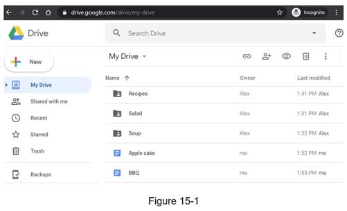
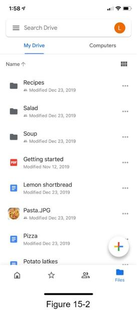

In recent years, cloud storage services such as Google Drive, Dropbox, Microsoft OneDrive, and Apple iCloud have become very popular. In this chapter, you are asked to design Google Drive.
Let us take a moment to understand Google Drive before jumping into the design. Google Drive is a file storage and synchronization service that helps you store documents, photos, videos, and other files in the cloud. You can access your files from any computer, smartphone, and tablet. You can easily share those files with friends, family, and coworkers [1]. Figure 15-1 and 15-2 show what Google drive looks like on a browser and mobile application, respectively.

